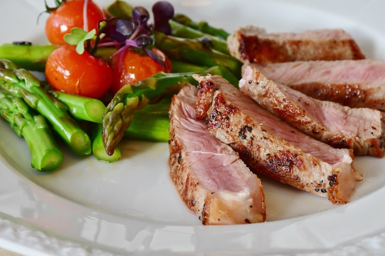

Марафон Правильного Питания
День 1 - 2 рацион
Доброе утро! Стакан воды для пробуждения твоего организма!
Завтрак 7:00-9:00
Перловая каша 80г (готового продукта)
Мед 1 ч.л.
Фрукт на выбор 150 грамм
Яйцо отварное
Стакан воды за пол часа
Перекус 10:00-11:00
Зеленое Яблоко 1 шт.
Хлебец с размятым ½ авокадо
Стакан воды за пол часа
Обед 13:00-14:00
«Ленивые голубцы» (см. рецепт) 200г.
Салат с зелени, огурца и салатного микса сбрызнуть лимонным соком 120г.
Стакан воды за пол часа
Перекус 16:00-16:30
ПП шаурма (тонкий лаваш, отварное филе, огурец, зелень) 150г.
Стакан воды за пол часа
Ужин 18:00-20:00
Хек, запеченный в фольге, в духовке 200г.
Салат с зелени, огурца и салатного микса сбрызнуть лимонным соком 150г.
Итого б/ж/у ( 101/60/120 ) = 1320 ккал.
День 3 - 4 рацион
Доброе утро! Стакан воды для пробуждения твоего организма!
Завтрак 7:00-9:00
Салат с омлетом (готовить из 2х белков + 1 желток, без молока и масла), с нежирным сыром, пекинской капустой и зеленью 180г.
Стакан воды за пол часа
Перекус 10:00-11:00
«ПП батончик» (см. рецепт) 1 шт ~ 50 грамм
Стакан воды за пол часа
Обед 13:00-14:00
Тушеное рагу (телятина, грибы, перец, морковь, лук и зелень) 150 гр
Печеный в духовке картофель 2 шт
Стакан воды за пол часа
Перекус 16:00-16:30
«Хлебец с бужениной с куриным филе» (см. рецепт) 1 шт.
Стакан воды за пол часа
Ужин 18:00-20:00
«Слоеный салат с тунцом» (см. рецепт) 200 грамм.
Итого б/ж/у ( 80/55/100 ) = 1220 ккал.
День 5 - 6 рацион
Доброе утро! Стакан воды для пробуждения твоего организма!
Завтрак 7:00-9:00
«Рулет с овсяным блином» (см. рецепт) с нежирным сыром "буко" + лосось 30 грамм.
Стакан воды за пол часа
Перекус 10:00-11:00
Фрукты 200 грамм или фруктовый салат (присыпать кокосовой стружкой)
Стакан воды за пол часа
Обед 13:00-14:00
Бурый рис 80 грамм (готового продукта), с мидиями 200 грамм.
Стакан воды за пол часа
Перекус 16:00-16:30
Орехи 25 грамм.
Стакан воды за пол часа
Ужин 18:00-20:00
Телятина отварная 150 грамм и спаржа отварная 150 грамм.
Итого б/ж/у ( 98/50/130 ) = 1280 ккал.